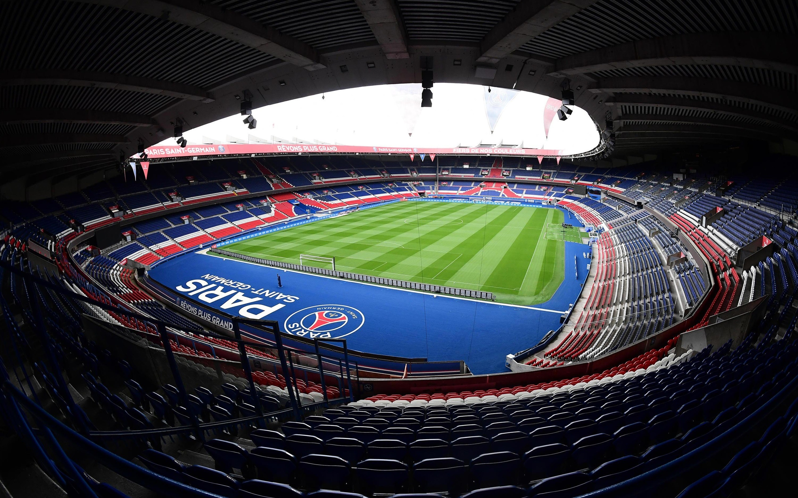

Linda ciudad la ciudad del amor Paris
Últimas Publicaciones
Parque De Los Principes Paris Francia
El parque de los principes en francia es el estadio mas bonito y es la casa del equipo de futbol Paris Saint-Germain FC en este estadio se han elaborado muschos eventos ya sean conciertos o otro tipo de eventos
Torre Eiffel

es un monumento nacional en París, Francia, que fue diseñado por la empresa del ingeniero civil Gustave Eiffel. Cuando se completó en 1889, era la estructura artificial más alta del mundo con 1.063 pies de altura. Tiene tres niveles de visitantes, dos de los cuales tienen restaurantes.